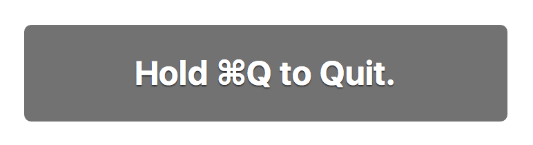

30 September 2016, 20:40
Main setting in Chrome
Chromium-based browsers on Mac have one important feature that I don't remember on Window—setting “Warn Before Quitting (⌘Q)”. If you check it, then Cmd + Q won't close browser immediately. It shows warning:
